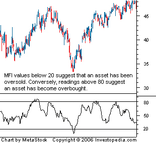

A momentum indicator that is used to determine the conviction in a current trend by analyzing the price and volume of a given security. The MFI is used as a measure of the strength of money going in and out of a security and can be used to predict a trend reversal. The MFI is range-bound between 0 and 100 and is interpreted in a similar fashion as the RSI.
The money flow index is calculated by using the following formula:
Typical Price = (High + Low + Close) / 3 Money Flow = Typical price * Volume Money Ratio = Positive Money Flow/Negative Money Flow
Note: Positive money values are created when the typical price is greater than the previous typical price value. The sum of positive money over the number of periods used to create the indicator is used to create the positive money flow - the values used in the money ratio. The opposite is true for the negative money flow values.
Money Flow Index = 100 - (100/ (1 + Money Ratio))
The money flow index is similar to the relative strength index (RSI). The fundamental difference is that the MFI also accounts for volume, whereas the RSI only incorporates price. Many traders watch for opportunities that arise when the MFI moves in the opposite direction as the price. This divergence can often be a leading indicator of a change in the current trend.
{kind=link}